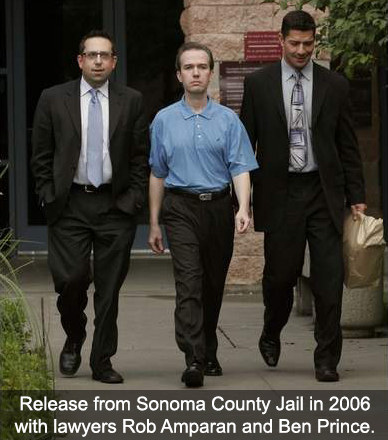

FBI Investigation for the
Serial Murders of Little Girls
In 2000, I moved with my wife and three sons to California. I worked in a prestigious school for girls in San Francisco and ultimately was working on my Masters of Elementary of Education degree, doing a teaching internship at a school in beautiful Napa Valley California. Every morning, I drove my classic Jaguar through famous vineyards to get to my little elementary school in paradise. One day, in the middle of a lesson with my fourth grade classroom, the principal came for me. Waiting in the office of the school were two Napa Valley detectives. My life would never be the same again. I would lose my wife and kids, my career, and my country in a matter of six months.
(JMK) 08/29/24 - On the night of August 13th 1997, in Santa Rosa California, Georgia Moses was dressed in blue jeans, a white shirt and a white nylon windbreaker. Georgia looked older than her young age of twelve. She was about 5' 4" tall, weighed 120 pounds, and had black, shoulder length hair that was commonly worn very neatly braided. On that August 13th night, she was hanging out with a friend when she received a page on her pager and called the number back. Pagers were all the rage with teens in 1997 and Georgia had one like so many other young people at the time. Sometime after Georgia phoned back the number that showed up on her pager, the friend walked her to a gas station near the intersection of Sebastopol Road and Dutton Avenue in Santa Rosa, where the friend said Georgia left with an unidentified man.
The above account is an excerpt from a 2021 news article. That being said, in earlier publications, closer to the time of her disappearance, it was reported that Georgia was last seen at 10 PM August 13th as she stood talking to a man in his 20s outside Jack in the Box restaurant, at the intersection of Sebastopol Road and Dutton Avenue in Santa Rosa.
This stranger was described as a 25 to 30 year old African American man, about 6' 4" tall and weighing 200 pounds, according to police. He had shaved or close cropped black hair and a slight mustache. He was driving a small, white four door vehicle.
On August 22nd, eight days after she disappeared, a Caltrans worker, fixing a broken guardrail, found a body in a grove of trees near the southbound on ramp to Highway 101 at Petaluma Boulevard South. The body was badly decomposed. Detectives thought it was an adult, but three days later, an anonymous caller, familiar with Georgia's family, told police that the remains could be hers. Sonoma County and Santa Rosa detectives said they didn't know whether Georgia was abducted or she had run away from home. On Friday August 29th 1997, authorities tentatively identified the body found in Petaluma as that of Georgia Moses.
In Spring 2001, in Sonoma County California, I was investigated for my involvement in the abduction of twelve year old Georgia Moses that led to her death. I suppose the authorities think I hired this black man to take Moses. After all, police detectives said to my wife during an interview with her in 2001 concerning the death of Georgia Moses, "We think he had something to do with that." They obviously knew I wasn't a young black man so I have to assume they meant, we think he had something to do with her abduction that led to her death. I guess it was just too much for Sonoma County Sheriff detectives that there were two different cases in the same city in California and I returned to Petaluma only 3 years after the second girl was found dead. Georgia Moses' remains were found a short walk from my Petaluma home in 2000-2001. It was thought by authorities that I had returned to the scene of my own crime for nostalgic and sentimental reasons or that I had ongoing business in the vicinity.
The last time California authorities talked to me about my involvement in the abduction of Georgia Moses that led to her death was Fall 2006. But that's another story that would take several paragraphs to describe. To make that long story short, I gave the authorities nothing.
On October 1st 1993, twelve year old Polly Klaas was abducted from her home in Petaluma California. A massive search for the then missing girl lasted for two months. On November 30th 1993, Richard Allen Davis was arrested for a parole violation. On December 4th 1993, over two months after Polly Klaas was abducted, Davis led investigators to her remains in Cloverdale California - forty-eight miles north of her home in Petaluma.
In 2019, a contact informed me that they were interviewed by the FBI for seven hours in 2006. They stated the interview was as much about Polly Klaas as JonBenet Ramsey. The FBI played numerous recorded calls from 2001 wherein I discussed Klaas in depth with an informant. The FBI stated that I had discussed details of Klaas with her killer in multiple conversations. Read more about this decades long FBI investigation and about the abduction that led to the murder of Polly Klaas in my October 2023 article.
I was ultimately arrested for alleged possession of child pornography. It might be interesting to note that the prosecution’s hired photographic, age analysis experts could not determine that persons in the five images were under their upper teens in age. If you’re conjuring up images of little six year old girls naked, think again. The images were shown to me by my attorney. They were so blurry, one was hard pressed to assume they were human. One of my attorneys said of one of the images, “is that a close up of a Bartlett pear?”
While locked up in semi-solitary confinement for six months with my only chance of release, a $100,000 bail, I was investigated by the FBI for the murders of unnamed little girls particularly in the states of California, Alabama and Georgia, according to Sonoma County prosecution and police records. At every court hearing for the six months I was in jail, the prosecution consistently brought up the status of the FBI’s investigation, saying to the judge that they were in constant contact with the FBI.
At the end of a grueling six months confinement, the prosecution stated to the judge that they had spoken to the FBI who informed them that their investigation of Karr was over. The prosecution then stated in the same court hearing that, at that point, they had no further interest in holding me incarcerated and accepted the terms of releasing me on my own recognizances.
After my release, I attended two court hearings. My defense presented to the judge that the computer in question was obtained without a search warrant further stating that, though there was a warrant for one of my California homes, there was not a search warrant of the other of my homes where the computer against me was retrieved. The judge instantly said that he thought law enforcement, in his words, ‘jumped the gun’ on retrieving this computer and should have gotten a legal search warrant. The case was almost dismissed until the prosecution spoke up that they needed a chance to tell the judge the intensity of the case - that this was much more serious and involved than just porn charges. The judge said ‘very well’ and the next hearing was scheduled a few weeks later. At the next hearing, the judge said that he had heard what the prosecution had to say and had decided that he would allow the evidence even though it had been found without a search warrant.
I was completely disillusioned with the legal system in Sonoma County. My constitutional rights were completely violated. I felt I would never get a fair trial in a place where evidence found without a search warrant was permitted. That, coupled with the fact that I was on the radar of the FBI for the first time in my life, prompted me to leave America once and for all.
On a rainy November night in 2001, I boarded a plane in San Francisco bound for London. I would remain out of America for five years until my 2006 arrest. My family thought me to be dead.
After my release from the Ramsey case charges in 2006, I was extradited from Colorado to California on 2001 charges of alleged possession of child pornography. During the hearings, the prosecution said that there was a tape drive supposedly found in a box near my evidence therefore it had to be mine. Such logic reminded me of 2001 when a judge said search warrants were unimportant. The prosecution said there were 16,000 images of child porn on that tape drive. Of course this drive did not belong to me but my lawyers and I played along.
My lawyer came to me and said, “The prosecution showed me hundreds of the 16,000 porn images. Guess what the images are of? Little boys. All of them are little boys.” And I thought John Mark Karr was supposed to be a sick pedo attracted to little girls? This matter kind of fizzled out. I think the prosecution knew they were in above their heads trying to first prove the drive belonged to me and secondly prove that I would have interest in child pornography of little boys.
Much to my amazement, one day my lawyers came to me and said the media had leaked to them that the computers held in evidence against me had been lost by the sheriff’s department in a move from an old evidence room to a new one. It seems that there were thousands of pieces of evidence moved but mine was the only evidence lost. I was released from all charges based on lack of evidence.
In reality, the sheriff’s department lost evidence that was found on a hard drive discovered without a search warrant; consisted of five deleted images; was located on a broken hard drive never operated in the state of California; and contained images that the prosecution’s experts could not determine was child pornography.
My lawyers were disappointed that the case did not go to trial so they could bury this bogus case against me once and for all. My lawyers did not consider the dropped charges as a victory.